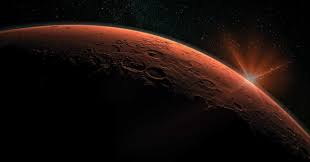
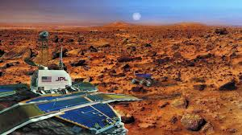
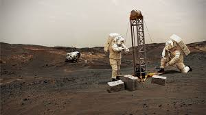
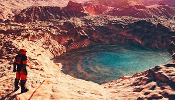
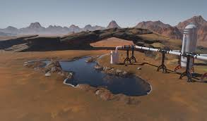

Мы нашли воду на Марсе
Ученые из Токийского технологического института проанализировали минералогические и
химические данные, полученные марсоходом Curiosity при анализе образцов древних озерных
отложений в кратере Гейла на Марсе, и пришли к выводу, что вода на Красной планете была
соленой и богатой минералами.

Об открытии рассказывает Phys.org. Исследователи отмечают, что в списке планет,
потенциально
обитаемых в прошлом или будущем, Марс находится на одной из первых строчек. Исследования
предыдущих лет доказали, что на Красной планете было большое количество поверхностной
воды.

Марс был покрыт океанами, реками и озерами, следы которых отчетливо видны на снимках с
орбиты. Одним из озер был нынешний кратер Гейла. До сих пор было получено крайне мало
данных
о том, каким составом обладала марсианская вода. Исследование японских ученых доказывает,
что по своему составу она была очень похожей на воду земных океанов.

Океаны Красной планеты были богаты минералами и солями. На это указывают окаменелые
частички того, что миллиарды лет назад было водой. В частности, в образцах был обнаружен
смектит - глинистый минерал, который на нашей планете образуется при помощи жидкой воды
путем ионного обмена.
Измерения показали, что отложения в кратере Гейла тоже образовались в присутствии жидкой
воды, которая имела рН (мера кислотности воды), близкий к рН современных океанов
Земли.

"Земные океаны, конечно, содержат мириады форм жизни, - пишут исследователи. - Поэтому
кажется убедительным то, что ранняя поверхностная среда Марса была местом, где могла бы
существовать современная земная жизнь. Однако остается загадкой то, почему доказательства
существования жизни на Марсе так трудно найти".

Ученые объявили, что впервые обнаружили свидетельства наличия на Марсе воды - в жидком
состоянии. Озеро размером около 20 км в поперечнике расположено у южного полюса планеты и
скрыто толстой ледяной шапкой. Открытие было сделано при помощи радара Marsis,
установленного на межпланетной станции "Марс-экспресс". Ранее исследователи предполагали,
что по поверхности Марса может иногда ненадолго разливаться вода тающих ледников (учитывая
низкое давление, она должна очень быстро испаряться), однако впервые появились основания
полагать, что на Красной планете существует и постоянный жидкий водный резервуар.